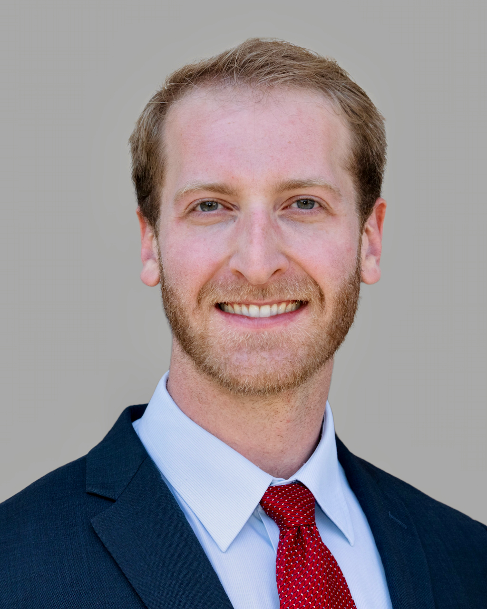

Jason Gusdorf is an assistant professor of medicine at Weill Cornell Medical School and a hospitalist at NewYork-Presbyterian/Cornell. He completed internal medicine residency at Beth Israel Deaconess Medical Center, where his research focused on cardiovascular outcomes and AI-assisted diagnostics. He received his MD from Georgetown University School of Medicine and his BSc in Science, Technology, and International Affairs from Georgetown's School of Foreign Service. Before medical school he studied at the Pardes Institute of Jewish Studies in Jerusalem. He is a folk musician with two records.
Gusdorf grew up in St. Louis, where he attended John Burroughs School and played water polo. His undergraduate honors thesis examined racial science in the Third Reich. He has released two folk albums, Of All the Souls (2020) and After the Seventh (2021), both written at Pardes and recorded during the COVID-19 lockdown.
BSc, Science, Technology & International Affairs
Georgetown University School of Foreign Service, 2016
Magna Cum LaudeHonors in Major
MD, Georgetown University School of Medicine, 2023
Assistant Professor of Medicine, Weill Cornell Medical School
Hospitalist, NewYork-Presbyterian/Cornell
Internal Medicine, BIDMC / Harvard, 2023–2026
Magna Cum Laude · Honors in Major (Georgetown, 2016)
Pardes Academic Fellowship, Jerusalem (2018, funded)
English · Spanish · Hebrew
Hospital medicine at an academic medical center, with active research in cardiovascular outcomes and AI-assisted diagnostics.
Hospitalist and assistant professor of medicine. Inpatient general medicine at an academic medical center in New York City. Research in cardiovascular outcomes and AI-assisted diagnostics.
Internal medicine at Beth Israel Deaconess Medical Center, a Harvard teaching hospital, 2023 to 2026. Primary care continuity clinic at Fenway Health. Rotations at the VA Hospital in West Roxbury. Research with the Secemsky and Rodman labs.
My research spans cardiovascular outcomes, health disparities, AI diagnostics, and anticoagulation therapy, with publications in JAHA, AJC, NEJM, and NeurIPS.
Systematic review of 14 studies (70,025 patients). Observational data suggested lower mortality with VKAs, particularly in solid malignancies with >6-month follow-up; randomized trials showed no mortality difference.
↗ PubMedNCDR Chest Pain-MI Registry (493,740 AMI hospitalizations): PAD patients had significantly higher in-hospital mortality, major bleeding, cardiac arrest, cardiogenic shock, and stroke regardless of age, sex, race, or AMI type.
↗ PubMed2016–2020 Medicare data (19,130 patients): stenting rates declined 41%. Black patients faced higher risks of hypertensive crisis and dialysis initiation; dual Medicare–Medicaid enrollment was associated with increased mortality.
↗ PubMedBenchmarked GPT-4, Claude 3.5 Sonnet, Llama 3.2, and GPT-3.5 for arrhythmia classification using multimodal ECG data with Retrieval-Augmented Generation. GPT-4 achieved AUC = 0.940 with equitable performance across demographics. First multi-LLM ECG benchmarking with integrated structured RAG and multimodal input.
↗ OpenReviewContributor to the design and creation of the Dr. CaBot AI system used in the NEJM Clinical Pathological Conference case analysis. Collaborated with the Manrai & Rodman Research Group to curate and analyze historical CPC cases and advance computational modeling of clinical diagnostic reasoning.
↗ NEJMBenchmark derived from 7,102 clinicopathological conference cases and 1,021 image challenges. "Dr. CaBot" outperformed physicians in text-based diagnostic reasoning but underperformed in image interpretation and literature retrieval.
↗ arXivCase report of an 86-year-old woman who developed spontaneous TLS in the context of metastatic pancreatic adenocarcinoma, a rare complication outside hematologic malignancies. doi: 10.14309/crj.0000000000001305
↗ PubMedReviews Talmudic sources and the medical literature to help physicians counsel Jewish patients about religious fasting, including contraindications such as metabolic and eating disorders. Also served as peer reviewer for this journal.
↗ Georgetown Medical ReviewRetrospective cohort study comparing rates of hemorrhage in patients who received tPA and CPR versus tPA without CPR. Findings showed no significant association between CPR and surgical procedures needed due to bleeding or pRBC transfusion volume.
During residency I joined Adam Rodman's research group at Beth Israel Deaconess Medical Center, where the central question is whether large language models can reason through clinical problems the way physicians do. Our lab built Dr. CaBot, an AI system that works through the same diagnostic puzzles published in the New England Journal of Medicine's Clinical Pathological Conferences. I helped design the system and curate the dataset behind it: 7,102 CPC cases and 1,021 image challenges spanning a century of NEJM publications, released as CPC-Bench.
The results were clarifying. Dr. CaBot outperformed physicians at text-based diagnostic reasoning but fell short on image interpretation and literature retrieval. The system was featured in NEJM Case 28-2025, the first time an AI contributor appeared in the journal's CPC series.
Separately, I proposed and led a benchmarking study with five Harvard-MIT Health Sciences and Technology master's students, testing four multimodal LLMs on arrhythmia classification from real ECG data using retrieval-augmented generation. GPT-4 achieved an AUC of 0.940 with equitable performance across demographics. We presented the work as a poster at NeurIPS 2025 in San Diego.
That research fed directly into two websites I built from scratch during training, each designed to close a gap I kept running into.
Manrai & Rodman Research Group
Beth Israel Deaconess Medical Center
Open benchmark: 7,102 CPC cases + 1,021 image challenges from a century of NEJM publications.
↗ arXivFirst multi-LLM ECG benchmark with RAG. GPT-4 AUC 0.940. Poster at NeurIPS 2025.
↗ OpenReviewInvited guest on Babbage podcast, June 2025: "LLM, MD: AI Health Bots Are Coming."
A clinical AI education site with honest reviews of medical LLM tools, copy-paste prompt templates by specialty, step-by-step workflow guides, and plain-language summaries of published trials. Content is written for clinicians, not engineers: no jargon, no hype, every claim sourced.
↗ Visit SiteA free EKG drill site with 470+ real 12-lead tracings for practicing wide complex tachycardia recognition. Covers monomorphic VT, polymorphic VT, and SVT with aberrancy. Uses spaced repetition so missed strips resurface until you get them right. Reference pages cover VT subtypes, mechanisms, diagnostic criteria, and treatment algorithms.
↗ Visit SiteFrom bedside mentorship at Harvard Medical School to leading Harvard-MIT master's research projects, teaching is central to my practice.
Proposed and led a benchmarking study of multimodal LLMs for ECG interpretation with five Harvard-MIT Health Sciences & Technology master's students.
One-on-one mentoring of 2nd-year Harvard Medical School students entering clinical clerkships, covering clinical topics, emotional support, and professional development.
5-hour session on ICU pulmonary physiology, asthma, and ARDS for 3rd-year Georgetown medical students.
4-hour POCUS session covering pneumothorax, pulmonary embolism, and myocardial infarction for 1st-year medical students.
A singer-songwriter at heart, I write and perform folk music inspired by spirituality, medicine, and the human experience.
Fourteen tracks of vocals and guitar, written at the Pardes Institute in Jerusalem and recorded during the COVID-19 lockdown. Nature, spirituality, introspection.
Also written at Pardes and recorded during lockdown. Drawn from a year of intensive Jewish text study in the hills of the Old City.
Invited guest on Babbage, The Economist, discussing generative AI in clinical diagnostics and the future of physician-AI collaboration.
Folk concert featuring original compositions written in Jerusalem alongside covers of Johnny Cash and Bob Dylan. Covered by St. Louis Public Radio as part of its Community Events series.
"Judaism is a fundamental part of my identity. Playing guitar at the bedside for cancer patients during college showed me that healing and music are not so different. They both require presence, vulnerability, and the courage to sit with another person in their most human moments."Jason Gusdorf, Pardes Institute Blog
Before medicine, my academic foundation was in international relations. At Georgetown's School of Foreign Service I studied Science, Technology & International Affairs, graduating Magna Cum Laude with Honors. My undergraduate work centered on nuclear strategy, European security, and the intersection of science and ideology, shaped by a family history rooted in the Holocaust and a semester living in Berlin retracing those roots. I served as a research assistant to Professor Matthew Kroenig, interned at a leading European policy think tank during the Crimea crisis, and wrote an honors thesis on racial empiricism in the Third Reich.
Full-time internship at CEPA in Dupont Circle, Washington, DC (2014). Helped organize an international conference with European heads of state and military officials to discuss Russia's invasion of Crimea. Researched Eastern European policy.
Research assistant in international relations at Georgetown, acknowledged in three publications on nuclear strategy, NATO policy, and democratic institutions & conflict.
Identity and Ideology: Racial Empiricism in the Third Reich. Mentored by Dr. Kathryn Olesko, Ph.D. Awarded Honors in STIA, Georgetown SFS, Spring 2016. Dedicated to Walter Gusdorf.
Wrote on international affairs topics for Georgetown's campus newspaper.
Growing up in a Reform Jewish household in St. Louis and attending OSRUI summer camp for seven years, Judaism has always been central to my life, not merely as religion but as an integrated framework for ethics, community, and purpose.
At Georgetown I served as the Jewish community's music leader for four years, leading Kabbalat Shabbat services that grew from roughly 20 participants to 65–80 each week. I launched a Torah-study program for the community.
Before medical school, I received a funded fellowship to study at the Pardes Institute of Jewish Studies in Jerusalem, returning later for an extended fellowship. That intensive immersion in Jewish text deepened my understanding of the spiritual dimensions of healing. These themes directly inform my clinical practice and academic writing, including a published essay on how Judaism shaped my love of medicine.
My family's history is inseparable from my Jewish identity. My grandfather, Walter Gusdorf, escaped the Holocaust from Worms, Germany, and I am a descendant of the Maharal of Prague. This heritage is foundational to who I am and directly motivated my honors thesis on racial science in the Third Reich.
In 2014 I lived in Berlin, studying German at the Goethe Institut and retracing my family's steps through Germany. That experience deepened my connection to the weight of European Jewish history and the responsibility of remembrance.
Seven years at the Union for Reform Judaism's summer camp, foundational to Jewish identity.
Led Kabbalat Shabbat for four years; grew attendance from 20 to 65–80; launched Torah study.
Studied German at the Goethe Institut in Berlin, retracing family history in Germany.
Grandfather Walter Gusdorf escaped the Holocaust from Worms; descendant of the Maharal of Prague.
Academic fellowship (2018) and extended return fellowship; intensive Jewish text study between degrees.
Both albums, Of All the Souls and After the Seventh, were inspired by time at Pardes, reflecting music as spiritual expression.
Published "How Judaism Influenced My Love of Medicine" (Pardes, 2019); "Viktor Frankl's Statue of Responsibility" (Capital Psychiatry, 2022); clinical guidance on the Yom Kippur fast (Georgetown Medical Review, 2023).
I see patients at Fenway Health and am happy to connect about research collaborations, music, or speaking opportunities.